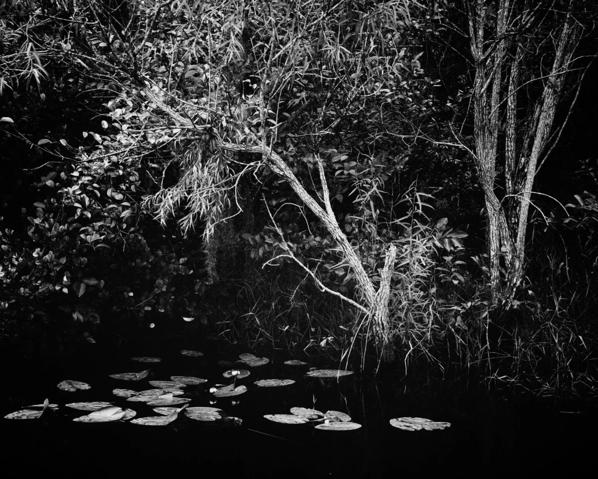
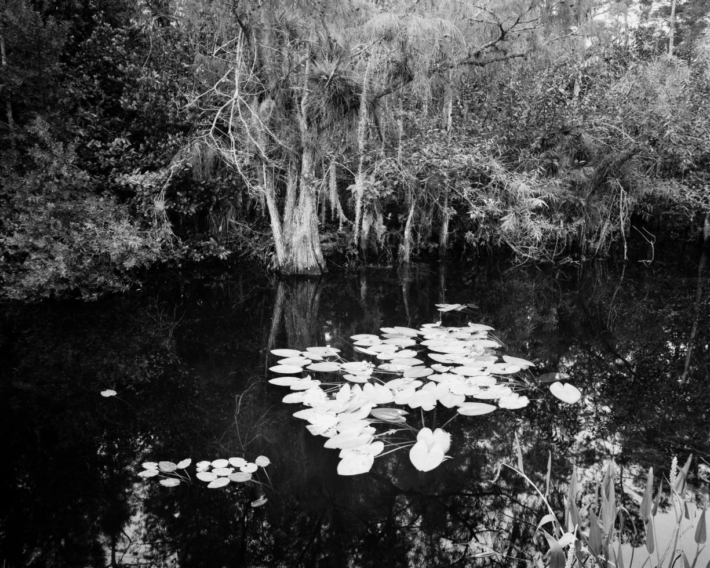
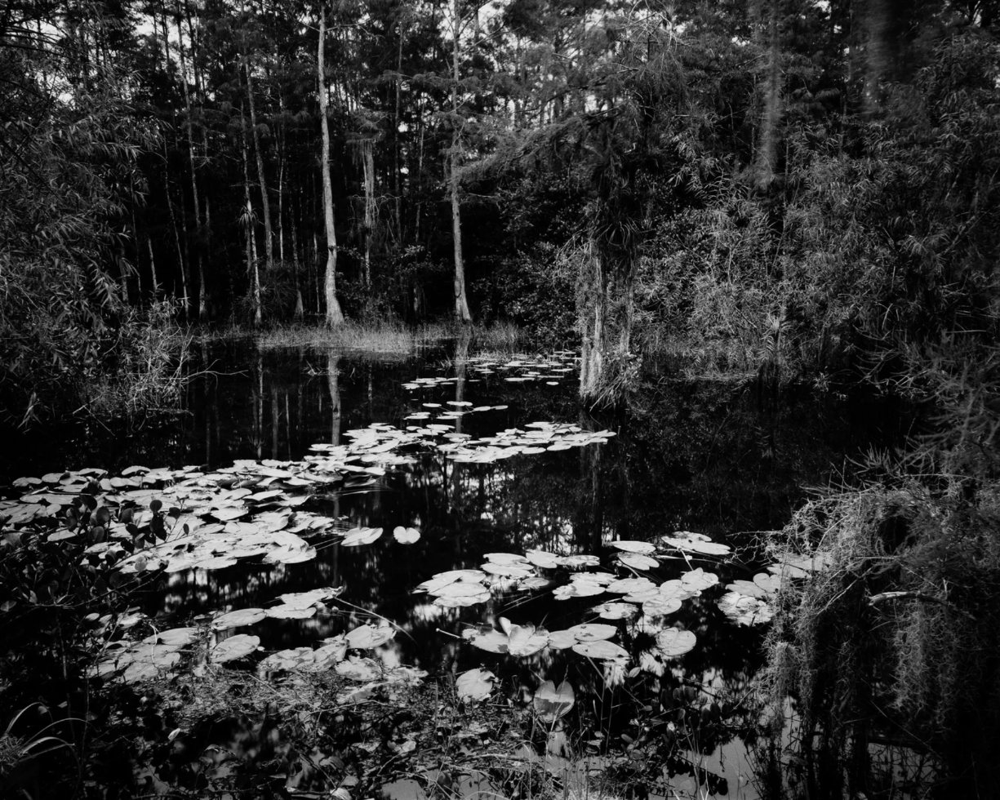
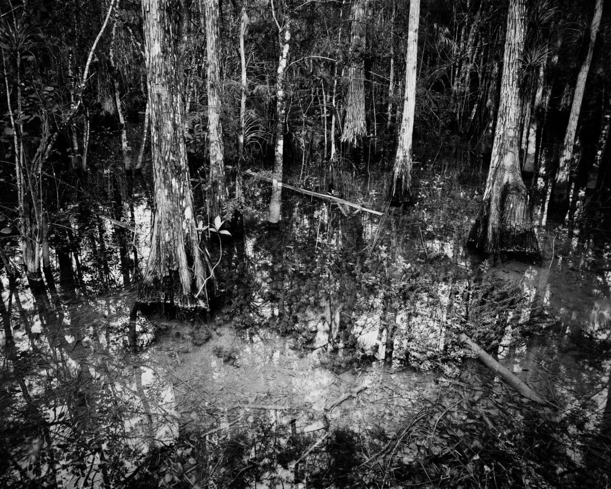
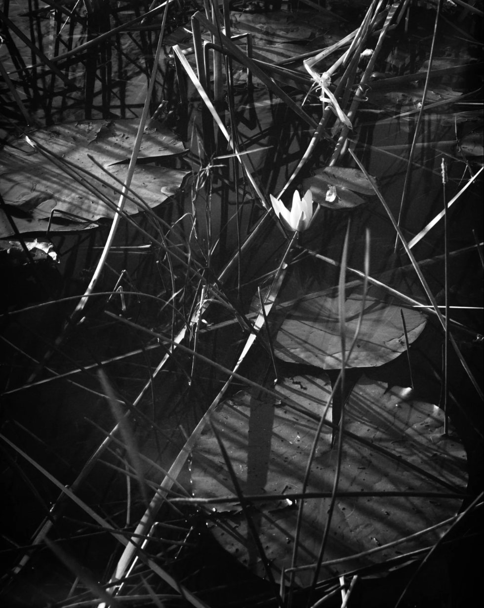
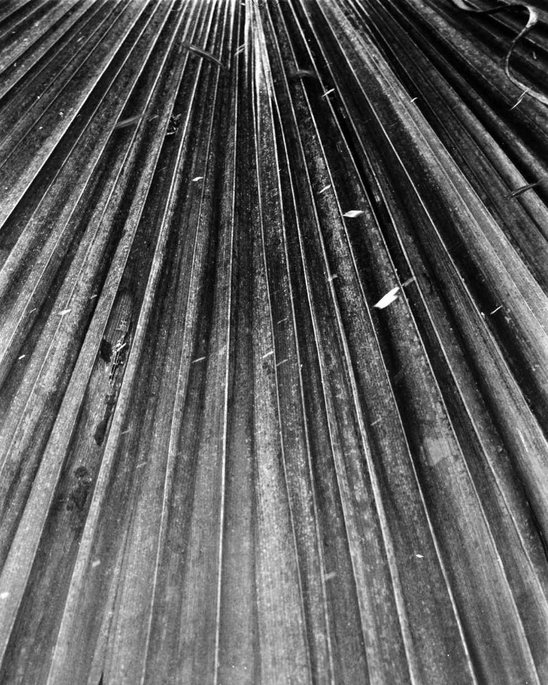
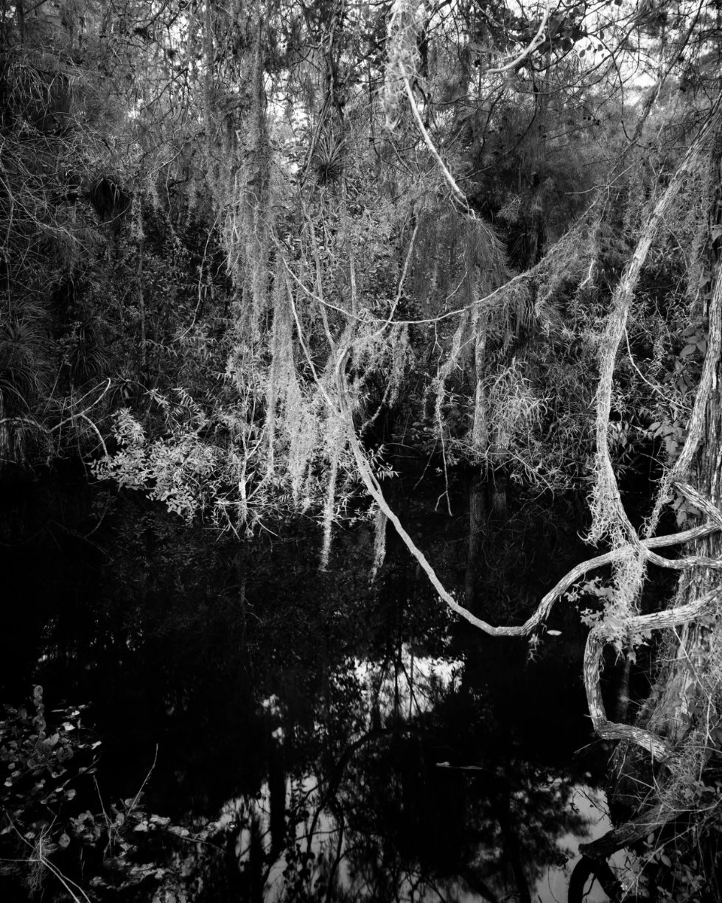
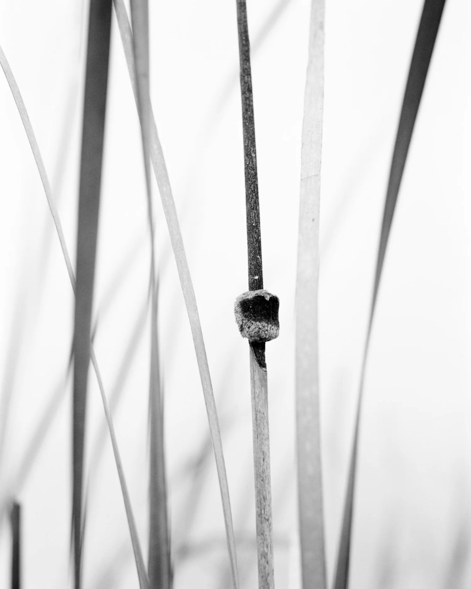

Everglades
Volodymyr Demkiv · 3D gallery room
Everglades is a large-format film study of light, water and horizon lines across the River of Grass: sawgrass, cypress, lilies and reflections, made with long exposures. The prints hang in a long museum corridor that opens into a skylit hall. Every print is a fiber-based silver gelatin print made by hand by the artist.
Each print is made by hand by the artist in the darkroom, on fiber-based paper, signed and numbered in an edition of 5 + 1 AP. Prints are available; please inquire.
Works in this room

Lilies Under the Thicket · Gelatin silver print on fiber-based paper, made by hand by the artist · Edition of 5 + 1 AP · Sizes up to 48 × 60 in 
Willow Slough · Gelatin silver print on fiber-based paper, made by hand by the artist · Edition of 5 + 1 AP · Sizes up to 48 × 60 in 
Cypress and Lilies · Gelatin silver print on fiber-based paper, made by hand by the artist · Edition of 5 + 1 AP · Sizes up to 48 × 60 in 
Pine Pond · Gelatin silver print on fiber-based paper, made by hand by the artist · Edition of 5 + 1 AP · Sizes up to 48 × 60 in 
Cypress Strand · Gelatin silver print on fiber-based paper, made by hand by the artist · Edition of 5 + 1 AP · Sizes up to 48 × 60 in 
Water Lily, Reeds · Gelatin silver print on fiber-based paper, made by hand by the artist · Edition of 5 + 1 AP · Sizes up to 48 × 60 in 
Palmetto Frond · Gelatin silver print on fiber-based paper, made by hand by the artist · Edition of 5 + 1 AP · Sizes up to 48 × 60 in 
Spanish Moss · Gelatin silver print on fiber-based paper, made by hand by the artist · Edition of 5 + 1 AP · Sizes up to 48 × 60 in 
Single Reed · Gelatin silver print on fiber-based paper, made by hand by the artist · Edition of 5 + 1 AP · Sizes up to 48 × 60 in